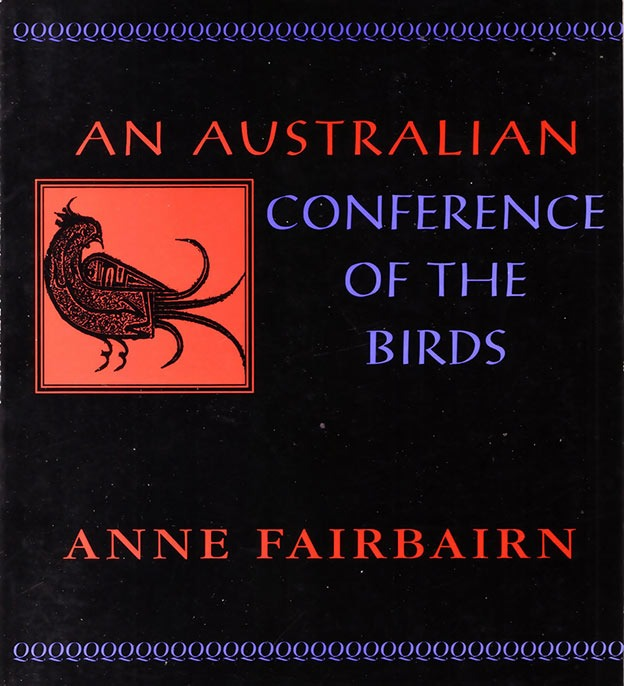

An Australian Conference of the Birds
Anne Fairbairn

Description
At the invitation of her Middle Eastern cousin the Hoopoe Bird, the Spinifex Pigeon calls together a gathering of Australian birds. They will go on a journey. They will confront the world and themselves. They will seek the path of the aware and will find the truth. Faird un-Din Attar ’ s Manteq at-Tair (The Conference of the Birds) is a glittering work of the Sufi tradition, the mystical school that is at the heart of Islam. Anne Fairbairn has flawlessly blended Middle Eastern and Australian imagery and counsciousness in this classical tale of discovery. Our poets and shared deserts come together with a natural ease in her narrative. An Australian Conference of the Birds is a delightful tribute to Attar ’ s famous poem. It is a story for young and old.
Description
At the invitation of her Middle Eastern cousin the Hoopoe Bird, the Spinifex Pigeon calls together a gathering of Australian birds. They will go on a journey. They will confront the world and themselves. They will seek the path of the aware and will find the truth. Faird un-Din Attar ’ s Manteq at-Tair (The Conference of the Birds) is a glittering work of the Sufi tradition, the mystical school that is at the heart of Islam. Anne Fairbairn has flawlessly blended Middle Eastern and Australian imagery and counsciousness in this classical tale of discovery. Our poets and shared deserts come together with a natural ease in her narrative. An Australian Conference of the Birds is a delightful tribute to Attar ’ s famous poem. It is a story for young and old.
{kind=link}
Information
| ISBN | 1876044012 |
| Release | 1995 |
| Pages | 35 |
About the Author
Reviews
Paul Knobel, Southerly
Wisdom on the Wing An Australian Conference of the Birds Paul Ernest Knobel Southerly , Vol. 56, No.3, Spring 1996 (pgs 224-225) In An Australian Conference of the Birds , the Sydney poet Anne Fairbairn has produced a masterpiece of poetry and one of the great poems of Australian English. The work is inspired by the Persian poet Attar’s Conference of the Birds , written in the twelfth century, itself a masterpiece of world literature. In Attar’s poem the birds of Persia gather to debate the meaning of existence and to search for the Simorgh, the Bird King who embodies the truth (Simorgh means thirty birds in Persian). Attar was a Sufi. Sufism is a mystical religion based on love, connected to both Hinduism and Christianity and widely disseminated from Turkey to India and as far as Malaysia and Indonesia; Sufi works are also know in Africa, in Hausa and Swahili. In An Australian Conference of the Birds , the setting is Australia and the birds are all Australian. Each bird gives his own view of life: ‘try to grasp eternal love’, the Peregrine Falcon says; ‘strive to avoid the shallow pools of the self (the Spinifex Pigeon); ‘forget... indulgence, and purify your soul’ (the Swamp Pheasant). Finally the birds, gathered around a billabong, look into the water and realise what they are seeking can not be found in any external action but only within themselves. The poem concludes with the Sea Eagle flying to ‘the Turquoise land’ - that is, Iran - with- a whisper of wool to place on Attar’s tomb, an allusion to the fact that the word Suf means wool and Sufis always wore woollen garments (as the notes at the end make clear). Sufi Poetry was allegorical. What is the meaning of Anne Fairbairn’s allegory? Clearly the work is meant as a comment on Australian society, its foibles, greed and petty vanities - and by extension other societies: ‘Your avarice is a regrettable sign of the times’ we learn from the Spinifex Pigeon, and later ‘Stop preening your feathers under the jewels of night / stop wandering aimlessly and search for the essence’. For those who know the contemporary poetry scene - especially the Sydney poetry reading scene - it ran also be read as a comment on poets and poetry (each of whom thinks she or he has produced a masterpiece every time she or he reads). Finally it seems a comment on rulers and parliamentarians: ‘A little less pride... will serve you well’. Like all great poetry this is a poem rich in wisdom: ‘be brave for life / demands it; try to stand firm but never be cruel’ the Spinifex pigeon tells us and ‘everybody / drunk or sober, thirsts for the Beloved’. ‘Our finite minds can never grasp the infinite / and wisdom is knowing we may never know’ we learn again from the same bird - perhaps the ultimate meaning of this postmodernist work in which many talk but few seem to be listening. Hopefully An Australian Conference of the Birds will be read by adults and to Australian children for many generations (it is especially suitable for reading to small children without being specifically a children’s book). It is an enchanting work and, in a world overwhelmed by serious problems, a reminder that the main purpose of art is to give pleasure. Many Australians who do not know the names of Australian birds will learn them from it (how aptly named seems the Squatter Pigeon). The poem is being translated into Persian and translations into other languages such as Turkish, Arabic, Urdu, Bahasa Indonesia and Chinese are already on the way we are told in the introduction. Its fame seems assured. It should receive many fine illustrations in future editions showing all the Australian birds who appear in it. The present edition only shows a few.
A.H. Johns, The Canberra Times
An Australian narrative inspired by Sufi classic A.H. Johns (academic) The Canberra Times , 16 December 1995 This little book is a delight, modest in presentation, rich in insight and spiritual wisdom, and exquisite in its use of language. It is a narrative poem inspired by a classic of Sufi literature in Persian, The Conference of the Birds (Mantek at-Tair) by the Persian mystic Farid ud-Din Attar (circa 1120 to circa 1193). An English rendering appeared in Penguin Classics {Farid ud-Din Attar, The Conference of the Birds , 1984). Attar’s poem is a long work of more than 4,000 lines. It is an allegory. The birds decide that they need a king. The Hoopoe, who in the Qur’an (Sura 27 [The Ant]:27) is Solomon’s envoy to the Queen of Sheba, is recognised as their leader. He tells them they should seek not a worldly king, but the Simorgh, a spiritual bird representing spiritual enlightenment, which, after a long and dangerous journey which will take them across seven valleys representing spiritual states, they will find within themselves. The birds are hesitant to take up the challenge. Each makes excuses that reflect the personality assigned to it by convention. The Nightingale is loath to abandon the rose, the Parrot is more concerned with its freedom than any spiritual quest; the Peacock longs only for the earthly paradise it once shared with Adam, and the Duck is reluctant to leave its ponds and streams. The Hoopoe answers each objection in turn, exposing the moral weakness that gives rise to it, and telling a story to drive her point home. Finally the birds set out on the long quest, and 30 of them reach their goal. A rich mystical theology underlies the structure of the poem as it unfolds. It is multilayered in its significances. It pulses with both spiritual and worldly wisdom and shrewd psychological perceptions, and is sustained by numerous allusions to and echoes of the Qur’an. Attar’s poem has given spiritual inspiration to millions over the centuries. Anne Fairbairn’s poem, dedicated to his memory, uses the same allegory. Attar’s Hoopoe calls to her cousin the Spinifex Pigeon ‘Through shadow-drifting veils of time and distance’ in the remote south to hold a conference of Australian birds. The Spinifex Pigeon obeys, and summons her country’s birds. They come from the scorching deserts and sullen swamps of this vast, forbidding land; from the seas, rivers, relentless skies and steely trees. With faith we shall beat our wings as one flying in our hearts towards the Light, seeking for our darkest sins and sorrows/with quiet resolution. The birds arrive one by one, and Fairbairn, in describing them by delicate shifts in the rhythm of the verse and hints at onomatopoeia in the choice of an epithet, gives a three-dimensional picture of movement, colour and sound distinctive of each of them. As the Spinifex Pigeon addresses them in turn, she modulates its tones with a skilful use of speech rhythms within the pulse of the verse, as in Your avarice is a regrettable sign of the times,’ sighed the Pigeon, eyeing the Bower Bird, ‘And this Crow has blood, on his beak. I warn you, possessions and cruelty bring no peace. Renounce your habits for love, When you reach for the inner meaning , as Rumi tells us, You reach peace, marrow of existence! Often she realises a truly Tennysonian verbal music: Now I hear the Bell-Birds calling me from Toma valley, to say one is flying here; they sound like tinkling bells in a distant shrine. Followed by a down-to-earth apothegm: It’s always wise to listen to what1 is said, but even wiser to know what’s left unsaid. Into the verse, Fairbairn weaves lines of the great Persian mystics Hafiz, Jafni, Rumi and Sa’di. and with them phrases, and echoes from the Qur’an, including the ecstatic phrase of God as Light upon light (Sura 24 [Light]:35) as sustenance that carries the birds on their way and the birds reach their goal, realise and recognise within themselves the spiritual wisdom that they seek. In gratitude, they send as a gift to Attar ‘a wisp of softest lamb’s wool’ carried by a relay of birds. Among them a Crested Hawk who flew across our starlit heart of dust over scrub and bony Eucalypts, over Wattles and River Gums she soared, above the Kimberleys and out to sea by a Sea Eagle who flew North high over the rhythm of rolling oceans. winging his way through storm-inked monsoon clouds split by fire, winds and hurricanes to Hormuz. At length it is passed to the Golden Eagle, who takes it to Nayshapur to Attar’s tomb. The gift has been delivered: a wisp of softest wool from the Great South Land to the great Sufi poet - and suf means wool - whose words inspired them. A token of love and honour from Australia to one of the great spiritual traditions of humankind.
Campus Review Review
On a poetic flight of fancy Ehsan Azari Campus Review , Vol. 6, No. 33, 28 August-3 September 1996 Poet Anne Fairbairn’s recasting of a 12th-century Persian fable is a piquant mixture of Sufi mysticism and poetry in a contemporary Australian setting. The poem fuses East and West in a way that seems to dissolve the ‘otherness’ of the East. An intimate debate among the birds opens the verse, akin to the beginning of Chaucer’s dream-poem ‘The Parliament of the Fowls’, but unlike Chaucer’s fowls, the Australian birds guided by Spinifex Pigeon hold a gathering by a billabong to discover their inner selves. The Wagtail and his companions, Crimson Rosella, Peregrine Falcon and Butterfly Quail, bring the flock of the birds from Australia’s scorching . deserts to the billabong. While rapt in a passion by their guide’s stirring sermon, the birds agree on an inner voyage in their search for divine unity. Many birds perish along the arduous inner journey. At the end, the surviving 30-odd birds open their eyes and see their quivering images in a mirror-like surface of the billabong. Through a revelation, they realise that the deity is none other than themselves - the core of Oriental emanationism. Then a wisp of wool, pecked from a lamb by a Crested Hawk, is ritually passed from beak to beak. A desert wind lifts the wisp to Uluru (Ayers Rock), and from there to the Iranian city of Naishapur by a Golden Eagle. There it slowly floats over the tomb of Farid ud-Din Attar, the great Sufi poet (1120-1230 AD) who wrote the Persian mystic poem ‘The Conference of the Birds’. Why a wisp of wool? By this symbol the poet makes her offering to the Persian saint. The Arabic word sufi is derived from the word for wool, traditionally worn by Sufi adherents. Fairbairn’s long interest in Middle East poetry is well-known, especially her remarkable editing of an anthology of Arabic poetry Feathers and Horizon. But her love of the region does not hold her back from exposing evil there. The plight of Iran today is laid out in the last lines of the poem: [Eagle] whipped away the wisp of wool, carrying It over sleeping Naishapur, over Night Hawks soaring in the wild nocturnal flight, Up to spinning supernal Light upon Light. An Australian tone is created with laconic humour throughout, by avaricious Bower Birds, laughing Kookaburras, the Cruel Crow and the Black Swan ‘stretching its long neck, searching for signs of passing day’. The poet’s depiction of Australian birds with a mystical context revives the anthropomorphic ethos of medieval Persian poetry. The Sufi doctrine of pleasure through pain has offered a conduit for the imagination of the poet to escape from an ‘inner wasteland’ and the tyranny of materialistic society to a dreamy world of Oriental mysticism. To live is to feel, to feel is to suffer, through Our pain, we find the pleasure of Paradise. The ubiquitous sense of despair in the book connects Fairbairn to a feeling of alienation found in Judith Wright’s work, and to another Australian poet, James McAuley, who drew on ‘the voyage within’ in his poem ‘Terra Australis’. Fairbairn’s miniature replica of the tale of Attar - the saddest of the Sufi poets - opens the gate of the rose gardens of ancient Persia for a new readership. Unlike Edward Fitzgerald, who introduced the sparkling Rubaiyat of Omar Khayyam to. the English-speaking world, she brings out a deeper mystical fable, perhaps to match her own gloomy vision.
The Mercury Review
Verse shaped by the nature of the land An Australian Conference of the Birds Patsy Crawford The Mercury , 29 January 1996 Anne Fairbairn brings another, more academic perspective to the business of poetry. She has lectured at universities in the Arab world and has translated Arabic poetry into English and much of her work is translated into Arabic, Turkish and Persian. It’s the Arabic influence she brings to An Australian Conference of the Birds , a very direct tribute to the work of Islamic poet Farid un-Din Attar whose A Conference of the Birds she describes as ‘a glittering work of the Sufi tradition.’ Fairbairn sets her poetic adventure among a gathering of Australian birds, including the spinifex pigeon who, at the invitation of her Middle Eastern cousin, the hoopoe bird, calls on them to go on a journey. It will be a journey of inner discovery and a search for truth. The poet uses the desert common to both Australia and the Arab lands as a backdrop and her narrative blends imagery and metaphor as it takes flight. It is a brief and pretty piece from a poet of great subtlety.
Five Bells Review
An Australian Conference of the Birds A.H. Johns Five Bells , Vol. 3, No. 3, April 1996 (pgs 8-9) [Text not yet available]